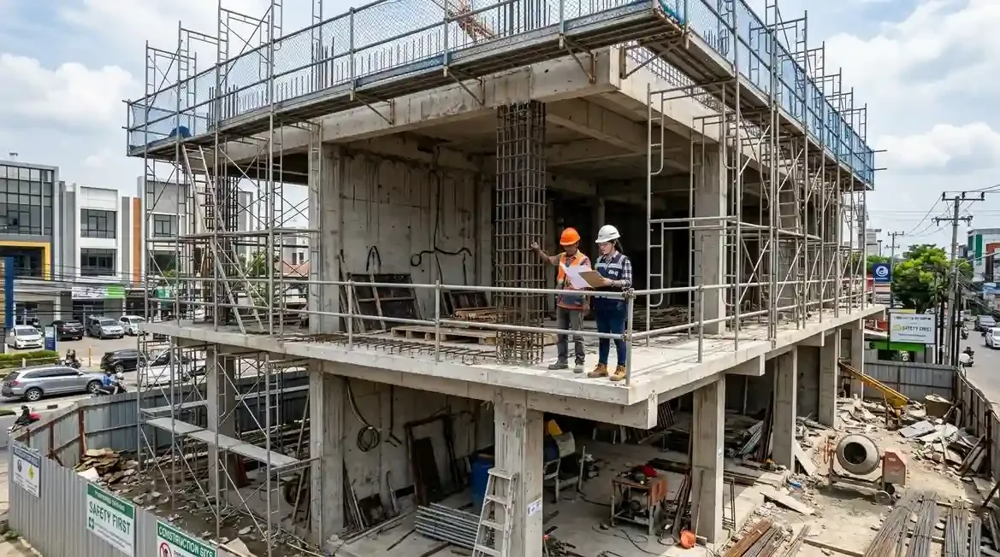

5 Tahapan Utama Pembangunan Ruko 2 Lantai
Ruko (Rumah Toko) 2 lantai merupakan salah satu aset properti komersial paling produktif di Indonesia. Selain berfungsi sebagai tempat tinggal di lantai atas, lantai bawah dapat difungsikan sebagai area toko, kantor perwakilan, café, maupun gudang distribusi.
Namun, agar pembangunan ruko berjalan lancar tanpa terkendala struktur atau anggaran, terdapat 5 tahapan penting yang wajib dilalui dari awal hingga kunci diserahterimakan:
- Survei Lahan & Legalitas Perizinan (PBG/IMB): Mengukur batas persil tanah, menganalisis kontur kepadatan tanah, serta mengurus Persetujuan Bangunan Gedung (PBG) sesuai Garis Sempadan Bangunan (GSB) kota.
- Perancangan Desain Arsitektur & Struktur: Membuat denah tata ruang komersial, fasad tampak depan, serta gambar detail pembesian struktur beton bertulang untuk lantai 2.
- Penyusunan RAB (Rencana Anggaran Biaya): Menghitung total volume bahan bangunan, spesifikasi material, serta upah borongan secara detail dan akurat.
- Eksekusi Konstruksi Fisik Lapangan: Dimulai dari fondasi cakar ayam, pengecoran sloof & kolom beton, pasangan dinding, dak lantai 2, atap, hingga tahap *finishing* interior & eksterior.
- Serah Terima Kunci & Masa Pemeliharaan: Pemeriksaan hasil kerja bersama (*checklist final*), penerbitan Berita Acara Serah Terima (BAST), dan berjalannya masa garansi pemeliharaan resmi.
- Pastikan ketinggian *floor-to-floor* lantai 1 minimal 3.8 – 4 meter untuk sirkulasi udara dan kesan lapang pada area usaha komersial Anda.
- Siapkan area parkir pengunjung sesuai syarat retribusi dan regulasi tata kota setempat.
Jasa Desain Rumah vs Beli Desain Online: Mana Pilihan Terbaik?
Saat memasuki tahap perancangan, calon pemilik ruko kerap dihadapkan pada dilema: apakah harus menyewa jasa desain rumah/arsitek profesional atau cukup beli katalog desain online siap pakai?
Kedua pilihan ini memiliki kelebihan dan kekurangan masing-masing yang sangat memengaruhi kelancaran proyek:
| Faktor Pembanding | Jasa Desain Rumah / Arsitek Kustom | Beli Desain Online Siap Pakai |
|---|---|---|
| Kesesuaian Lahan Fisik | 100% dipersonalisasi mengikuti ukuran, kontur, dan bentuk tanah Anda. | Generik / kaku. Seringkali tidak cocok dengan lebar & panjang lahan nyata. |
| Perhitungan Struktur 2 Lantai | Dihitung khusus oleh pakar sipil (kekuatan beton, fondasi, iklim lokal). | Asumsi standar umum. Berisiko retak atau *over-engineering* bahan. |
| Syarat Perizinan (PBG) | Dilengkapi gambar kerja teknis (DED) & tanda tangan sertifikat ahli. | Hanya dapat konsep dasar visual, sulit dipakai untuk izin resmi daerah. |
| Biaya Awal | Investasi menengah-tinggi (sebanding dengan efisiensi jangka panjang). | Biaya murah di awal. |

Pengerjaan struktur beton dan pembesian kolom ruko 2 lantai yang presisi sesuai standar gambar kerja teknis.
Risiko Menggunakan Desain Online Siap Pakai untuk Ruko
Meskipun membeli gambar cetak biru siap pakai melalui internet terlihat menggoda karena harganya yang terjangkau, terdapat beberapa risiko teknis yang berpotensi merugikan pemilik bangunan:
- Beban Struktur Tidak Akurat: Karakteristik tanah di setiap wilayah berbeda (tanah keras, berpasir, atau bekas rawa). Tanpa analisis uji tanah (*soil test*), fondasi ruko 2 lantai bisa mengalami penurunan atau retak struktur.
- Orientasi Matahari & Ventilas Usaha: Ruko butuh pencahayaan dan sirkulasi alami yang optimal agar hemat energi pendingin (AC). Desain generik online tidak mempertimbangkan pencahayaan alami di lokasi usaha Anda.
- Pembengkakan Biaya Material di Lapangan: Gambar yang kurang detail memaksa tukang di lapangan menerka-nerka volume besi dan semen, yang sering memicu boros material (*waste*).
- Untuk ruko 2 lantai, investasi pada jasa desain rumah/ruko profesional akan menyelamatkan Anda dari potensi perbaikan struktur berbiaya puluhan juta rupiah di masa depan.
Pentingnya RAB Transparan dan Pengawasan Kontraktor
Setelah gambar teknis disepakati, tahapan krusial berikutnya adalah penyusunan Rencana Anggaran Biaya (RAB). RAB yang baik merinci secara transparan:
- Volume pekerjaan fondasi, beton bertulang, dinding, dan atap.
- Merek serta mutu spesifikasi bahan (semen, besi beton SNI, keramik, cat).
- Harga satuan upah tenaga kerja borongan dan *timeline* termin pembayaran.
Bekerja sama dengan kontraktor bangunan terpercaya memastikan ruko Anda dibangun sesuai standar keselamatan bangunan gedung, tepat waktu, serta bergaransi resmi.
Pertanyaan Populer Seputar Pembangunan Ruko 2 Lantai
Kesimpulan Praktis
Mematuhi 5 tahapan bangun ruko 2 lantai secara disiplin dan memilih jasa desain rumah/ruko kustom profesional adalah kunci utama menjamin kekuatan struktur fisik, keabsahan perizinan legal, serta efisiensi anggaran investasi bisnis Anda. Konsultasikan rancangan ruko impian Anda bersama tim ahli kami.